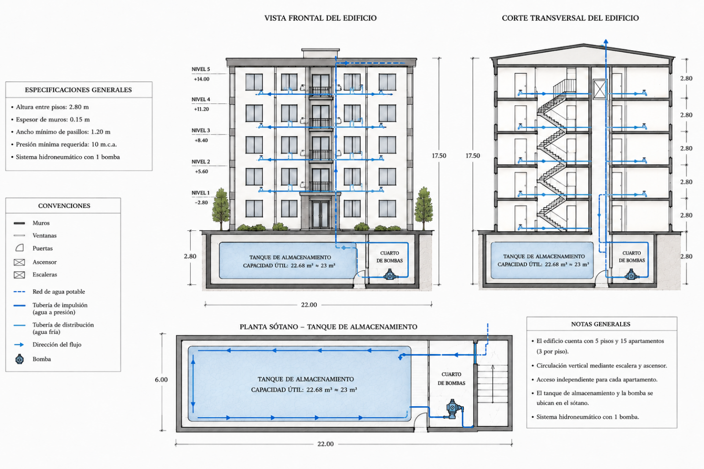

Tanque de Almacenamiento (Sótano):
• Capacidad de diseño: 22,680 L
• Reserva autónoma para 3 días
• Capacidad de diseño: 22,680 L
• Reserva autónoma para 3 días
Cuarto de Bombas:
• Impulso hacia montante principal
• Bomba centrífuga monoetapa
• Impulso hacia montante principal
• Bomba centrífuga monoetapa
Montante Principal (Riser):
• Reducción gradual 2" → 1½"
• Elevación del agua hasta Piso 5
• Reducción gradual 2" → 1½"
• Elevación del agua hasta Piso 5
Punto Crítico (P5 Apto 3 Ducha):
• Presión de diseño: 10 m c.a. (mínimo NTC 1500)
• Altura estática Δz = 16.70 m
• Presión de diseño: 10 m c.a. (mínimo NTC 1500)
• Altura estática Δz = 16.70 m
🏢
Parámetros de Diseño del Edificio
Datos base del proyecto de Fenómenos de Transporte
1
HYD-1 — Análisis de Pérdidas de Energía
Darcy-Weisbach + Colebrook-White por tramo · Verificación NTC 1500 (0.5–2.5 m/s)
Propiedades del Fluido (Agua a 15°C, Condiciones de Bogotá)
Red Hidráulica — Tramos T1–T9 (Tramo Desfavorable: Piso 5 Ducha)
| Tramo | Descripción del Tramo | D int (mm) | Longitud (m) | Q (L/s) | ΣK Accesorios |
|---|
📐 Ecuaciones Aplicadas (Pérdidas de Carga) ▼
Velocidad de Flujo: v = Q / A = 4Q / (π · D²) Número de Reynolds: Re = ρ · v · D / μ Colebrook-White (Iteración Newton-Raphson para régimen turbulento Re > 4000): 1 / √f = −2 · log₁₀( ε/(3.7·D) + 2.51/(Re·√f) ) Si Re < 2300 (Laminar): f = 64 / Re Pérdidas por Fricción (Darcy-Weisbach): hf = f · (L / D) · (v² / 2g) Pérdidas Menores (Accesorios): hm = ΣK · (v² / 2g) Pérdida Total del Tramo: h_total = hf + hm
2
HYD-2 — Dimensionamiento de Bomba
Cabeza Dinámica Total (TDH) · Potencia al Freno · NPSH Disponible · Selección Comercial
📐 Ecuaciones Aplicadas (Bombeo y NPSH) ▼
Cabeza Dinámica Total: TDH = Δz + Σhf + Σhm + P_req_piso5 Potencia Hidráulica: P_hid = ρ · g · Q · TDH [Watts] Potencia al Freno: P_freno = P_hid / η [Watts] → (HP = P_freno / 745.7) NPSH Disponible: NPSH_d = P_atm/(ρ·g) + Δz_succión − hf_succión − P_vapor/(ρ·g) • Bogotá (2640 m): P_atm = 74,660 Pa → 7.61 m c.a. • Agua a 15°C: P_vapor = 1,705 Pa → 0.174 m c.a.
3
HYD-3 — Simulación Horaria & Consola de Válvulas
Presión por franja horaria · Control interactivo de válvulas de piso en tiempo real
Distribución Horaria del Consumo Residencial
| Franja Horaria | Horas | Duración (h) | % Consumo Diario | Tipo de Demanda |
|---|
Σ = 100%
La suma de porcentajes horaria debe ser exactamente 100%.
📐 Ecuaciones Aplicadas (Simulación Horaria) ▼
Caudal por Franja: Q_franja = (%_consumo · Q_diario) / (Duración_h · 3600) [L/s] Escalamiento de Pérdidas (Régimen Turbulento): Pérdidas(Q_franja) = Pérdidas_diseño · (Q_franja / Q_diseño)² Presión disponible en Piso 5: P_piso5 = TDH_bomba − Δz − Pérdidas(Q_franja) Estado: ✓ Satisfactorio si P_piso5 ≥ P_mín (10.0 m.c.a.)
4
HYD-4 — Estimación Económica del Sistema
Precios Referencia Colombia 2024-2025 (COP) · Tuberías, accesorios, bomba y obra
Listado de Precios Unitarios (Editable)
| Material o Componente | Und. | Precio Unitario (COP) | Cantidad Requerida |
|---|
📋
Exportar Resultados de Ingeniería
Formato pre-estructurado para copia e inserción en el informe Word del proyecto